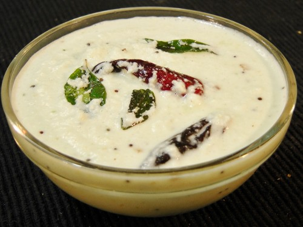
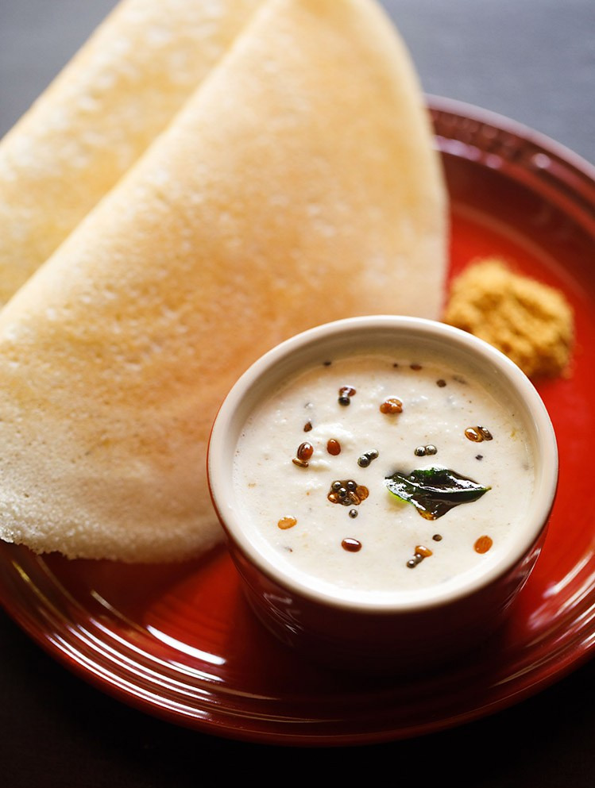
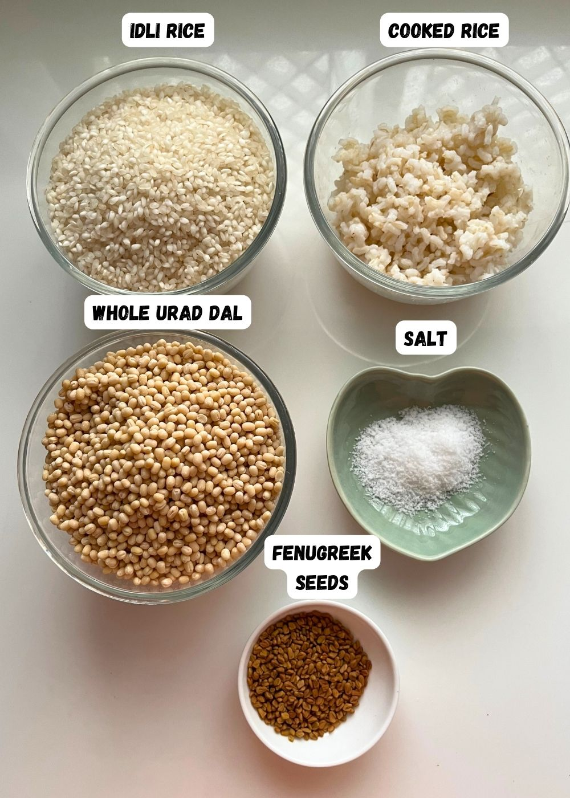
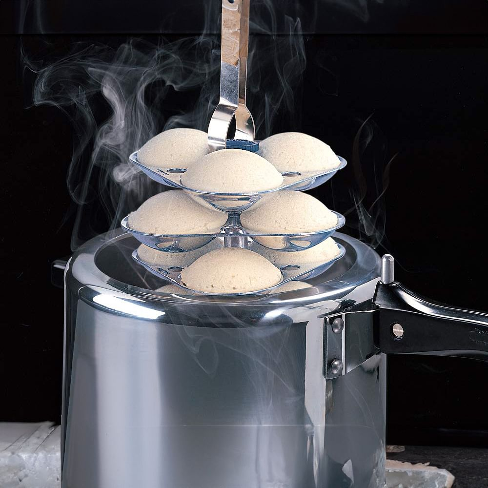

Tasty South Indian Dosa
- Batter Preparation
- Ingredients:
- 1 cup parboiled rice
- 1 cup raw rice
- 1/2 cup urad dal
- 2 tbsp chana dal
- 1/4 tsp fenugreek seeds
- Salt and water
- Steps:
- Rinse everything well.
- Soak all together for 6 hours.
- Grind to smooth thick batter.
- Ferment overnight in warm place.
- Mix salt next morning and stir gently.

- Coconut Chutney
- Ingredients:
- 1/2 cup coconut
- 2 tbsp roasted chana dal
- 1 green chili, ginger, salt
- Steps:
- Grind with water into smooth paste.
- Optional: add mustard and curry leaves tempering.

- Final Dosa
- Heat pan and spread batter.
- Drizzle oil and cook till crisp.
- Place masala, fold and serve hot.

Soft South Indian Idli
- Batter Preparation
- Ingredients:
- 2 cups idli rice
- 1/2 cup urad dal
- 1/4 cup poha
- 1/4 tsp methi seeds
- Salt and water
- Steps:
- Soak rice, dal, poha separately.
- Grind dal and poha smooth.
- Grind rice slightly coarse.
- Mix and ferment overnight.
- Add salt before steaming.

- Steaming
- Grease idli plates.
- Pour batter 3/4 full in each mold.
- Steam for 10-12 mins.
- Cool a bit, then remove and serve.

- Side Chutney
- Ingredients:
- Coconut, chana dal, chili, ginger
- Steps:
- Grind smooth with water.
- Add optional tempering if desired.
- Tips
- Use wet grinder for better results.
- Keep batter warm to ferment well.
- Don't stir too much after rising.